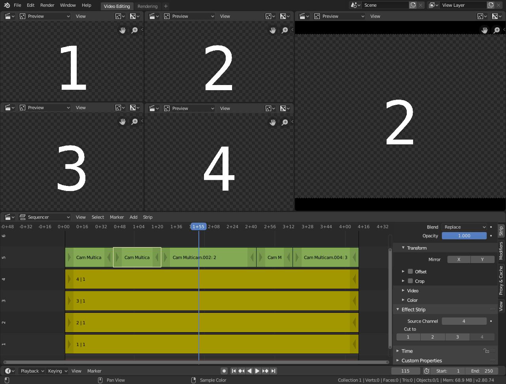

Multicam Selector¶
The Multicam Selector strip is used for multi-camera editing. Multi-camera editing is when a scene is recorded using multiple cameras from different angles and then edited together afterwards. This process can be rather easy in the VSE if you properly setup every to improve your workflow.
选项¶
- 源通道
多机位选择器获取输入的通道。
- 剪切
在当前帧处剪切多机位片段并自动将 源通道 更改为所选通道。
工作流程¶
首先，要添加进每个视频片段。
Next, you will want to sync all your cameras by either using Audio Waveforms or by the movement of objects.
Tip
To make syncing strips easier you can group cameras, their audio, and their effects together using Meta Strips.
Add a viewer region for every input channel and to improve the performance use proxies.
Add a Multicam Selector strip above all the channel tracks.
After completing these steps you should get something similar to the image below:
多摄像机编辑设置。¶
现在选择多机位片段，如果你查看片段选项（在侧栏内），你会注意到，多机位是一个相当简单的效果片段：它只需将选定的通道作为输入。这就是全部内容。它的神奇之处在于方便的键盘布局。
当选择多机位片段时， 1 到 9 键被映射到剪切按钮。因此，选择多机位片段并开始播放，并在观看各个摄像机时按下正确的输入键。
每个剪切都会以一个小型的多机位选择器片段作为结束。
In reality, it boils down to: watch a few seconds to see, what is coming, watch it again and do a rough cut using the number keys, do some fine-tuning by selecting the outer handles of two neighboring Multicam for A/B rolling.